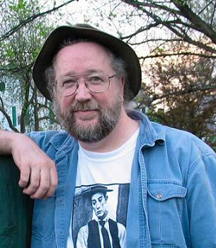

The fictional character the Swamp Thing has appeared in five American comic book series to date, including several specials, and has crossed over into other DC Comics titles. The series found immense popularity upon its 1970s debut and during the mid-late 1980s under Alan Moore, Stephen Bissette, and John Totleben. These eras were met with high critical praise and numerous awards. However, over the years, the Swamp Thing comics have suffered from low sales, which have resulted in numerous series cancellations and revivals.
As Swamp Thing was heading for cancellation due to low sales, DC editorial agreed to give Alan Moore (at the time a relatively unknown writer whose previous work included several stories for 2000 AD, Warrior and Marvel UK) free rein to revamp the title and the character as he saw fit. Moore reconfigured the Swamp Thing's origin to make him a true monster as opposed to a human transformed into a monster. In his first issue, he swept aside the supporting cast Pasko had introduced in his year-and-a-half run as writer, and brought the Sunderland Corporation (a villainous group out to gain the secrets of Alec Holland's research) to the forefront, as they hunted down the Swamp Thing and "killed" him in a hail of bullets.
Stephen R. Bissette (born March 14, 1955)[1] is an American comics artist, editor, and publisher with a focus on the horror genre. He is known for working with writer Alan Moore and inker John Totleben on the DC Comics series Swamp Thing in the 1980s.
Bissette was born and raised in Vermont, where he still lives, and was raised Catholic.[2] Shortly after the publication of his first work, Abyss (1976),[3][4] Bissette enrolled in the first class of The Kubert School.[5] Before his first year was completed, his work was being published professionally in the pages of Sojourn, Sgt. Rock, and Heavy Metal.[3] In 1978, Bissette was among the Kubert School's first graduating class, along with classmates Rick Veitch, Tom Yeates, and others. While still enrolled at The Kubert School, Bissette executed the logo for early New Jersey synth-pop band WKGB and drew the cover for the band's 1979 single "Non-Stop/Ultramarine" on Fetish Records (UK Fetish 002).[6] His early work appeared in the pages of Heavy Metal, Epic Illustrated, Bizarre Adventures, Scholastic Corporation's Weird Worlds and Bananas illustrating stories written by Goosebumps founder and author R. L. Stine, and he worked with Rick Veitch on the graphic novelization of Steven Spielberg's motion picture 1941.